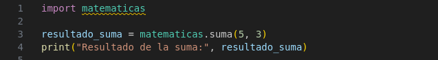
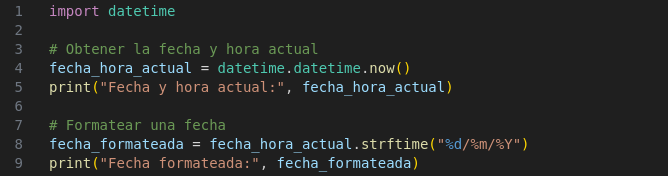

Los módulos son archivos que contienen definiciones y declaraciones de funciones, clases y variables que pueden ser reutilizados en diferentes programas. Python tiene una gran cantidad de módulos estándar que proporcionan funcionalidades predefinidas para realizar tareas comunes como manipulación de cadenas, operaciones matemáticas, manejo de fechas, acceso a archivos, entre otros. Además, Python permite la creación de módulos personalizados, que facilitan la organización del código en proyectos más grandes y complejos.
Estructura de un Programa Informático y Python
Módulos
1. ¿Qué es un Módulo?
Un módulo en Python es un archivo de Python (.py) que contiene un conjunto de funciones, clases y variables relacionadas entre sí. Los módulos ayudan a dividir un programa en partes más pequeñas y manejables, lo que hace que el código sea más modular, reutilizable y fácil de mantener. Los módulos pueden ser importados en otros programas para utilizar sus componentes, lo que facilita la reutilización de código sin necesidad de duplicarlo.
Supongamos que tienes un archivo llamado matematicas.py que contiene varias funciones matemáticas:
Este archivo es un módulo que contiene funciones para operaciones matemáticas básicas. Luego, en otro archivo, puedes importar este módulo y usar las funciones definidas en él.
2. Importación de Módulos
Python proporciona varias formas de importar módulos en un programa. Una de las formas más comunes es utilizando la palabra clave import, seguida del nombre del módulo. Una vez que el módulo es importado, puedes acceder a sus funciones, clases y variables utilizando el nombre del módulo.

En este caso, hemos importado el módulo matematicas y luego accedemos a su función suma() utilizando el prefijo matematicas..
3. Módulos Estándar de Python
Python viene con una gran cantidad de módulos estándar que proporcionan funcionalidades útiles para todo tipo de tareas. Algunos de los módulos más comunes son:
-math: Ofrece funciones matemáticas como trigonometría, logaritmos, factoriales, etc.
-datetime: Proporciona clases para manipular fechas y horas.
-os: Permite interactuar con el sistema operativo, como manipular archivos y directorios.
-random: Proporciona funciones para generar números aleatorios.
-sys: Permite acceder a funciones y variables del sistema.
En este caso, se utiliza el módulo math para calcular la raíz cuadrada de 16 y obtener el valor de pi.

En este ejemplo, utilizamos el módulo datetime para obtener la fecha y hora actual, y luego formatearla en un formato específico.
4. Organizar Módulos en Paquetes
En proyectos grandes, es común organizar varios módulos en paquetes. Un paquete es una carpeta que contiene varios módulos y un archivo especial llamado __init__.py que indica que la carpeta debe ser tratada como un paquete de Python. Los paquetes permiten estructurar el código en directorios jerárquicos.
-_init__.py: Este archivo puede estar vacío o contener inicialización para el paquete. Se ejecuta cuando se importa el paquete.
-modulo1.py, modulo2.py: Son módulos dentro del paquete.
Para utilizar un módulo dentro de un paquete, se puede hacer lo siguiente:
Obra publicada con Licencia Creative Commons Reconocimiento Compartir igual 4.0